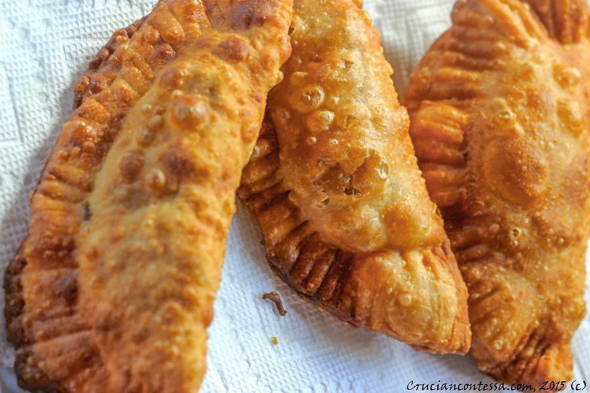

This is a pate. It is a dish in St. Croix the place i grew up. It has many other names but it's all the same concept.
As I said before the pate is a Cruzan(what people from St. Croix are called) made dish that that has many other names in different cultures. It is made with any meat of your choosing wrapped in dough that is then fried.